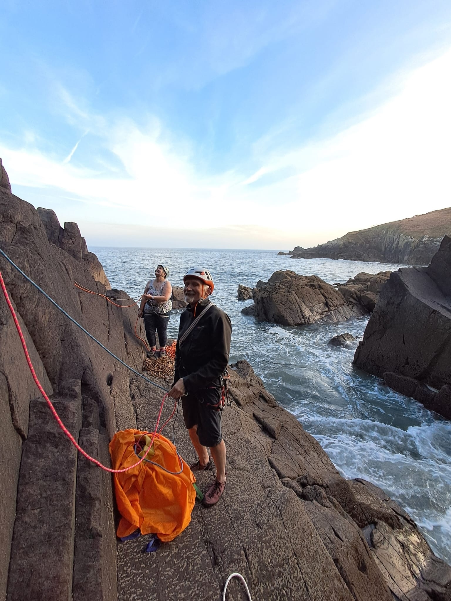

Contact Us
The best way to contact the club is via the email pembrokeshireclimbingclub@gmail.com.
You can also see what has been going on in the club recently via our Facebook and Instagram pages:

The best way to contact the club is via the email pembrokeshireclimbingclub@gmail.com.
You can also see what has been going on in the club recently via our Facebook and Instagram pages:
